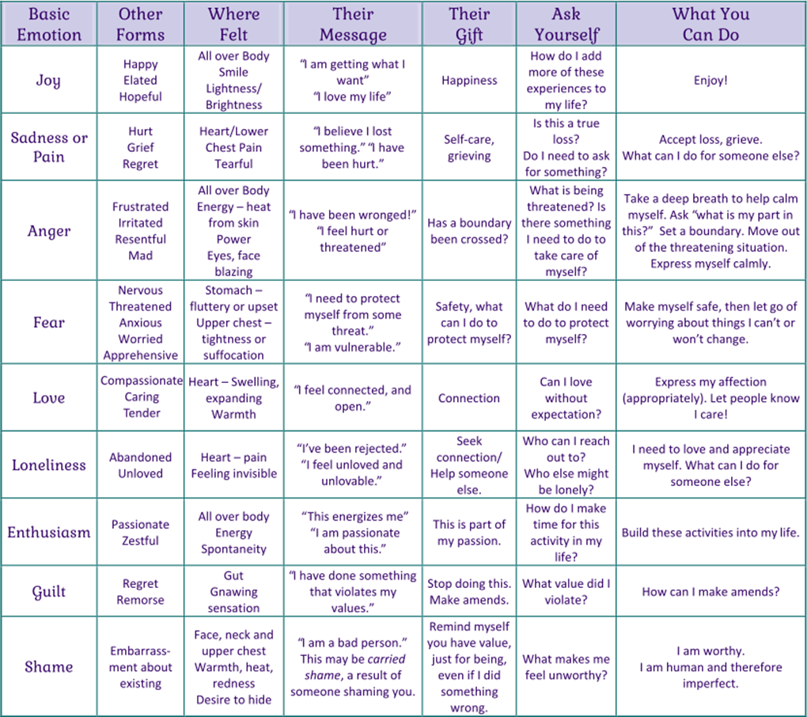

Mind Feed - It's Over or It's Okay
Am Done!!
I can't do this Anymore!!
I'm a looser!!
I need a break forever!!
Have you ever felt like your whole world is crashing down in front you and you are left with no energy even to blink your eye to let the tear drop down?
If Yes! Then isn't it amazing & surprising to see how carried yourself gracefully with all your strength. Were you even aware of this agility that you possess?
Being mentally healthy doesn't mean having no stress, fear, anger, jealous, sadness, frustration, anxiousness but to know how to cope with them and not letting them stop you from living your best. Usually this feelings are considered to be negative because of their nature and impact but we skip over to understand the reason and cause of those uncomfortable feelings.
Feelings emerge from a particular need they act like messengers bringing some important information to your notice. These needs can vary in range depending on different situations and circumstances.
There's a beautiful saying by Charles Darwin which goes like this -
“It is not the strongest nor the most intelligent of species that survives,
but rather the one that is most adaptable to change.
Some best trainers in Life which comes on free of cost that leaves greatest impact filled lessons on Developing Mental Toughness, increasing EQ & AQ are as follows:
- Develop interest in any particular sport & have an emotional connection with that Sport
- Learn to know about your needs, strengths, abilities, weakness, like and dislikes be self-aware of your own personality.
- Develop a habit of being okay and receptive to criticism and convert it to constructive feedbacks
- Be okay to fail and try to understand what the failure is teaching you. Learn to accept challenges
- Understand your Boundaries and set standards for yourself and others.
- Invest your time on things and people that are open to help you grow.
- A candidate with higher EQ - Emotional Quotient & AQ - Adversity Quotient is more likely to be chosen by employers than one with higher IQ - Intelligent Quotient. People with high EQ & AQ are more Adaptable than the people with high IQ.
- Adversity Quotient (AQ) Talks about ability to bounce back or recover after a setback. Imagine you have no experience of driving a car and you are required to participate in a race? Is it possible to drive? Top of it expecting to win the race in first place? Isn't it unrealistic, you need to face a challenges to learn how to overcome it. Setbacks are most important lessons required that helps us to mold ourselves and prepare for the future challenges better than any instructors in life.
Master Your Emotions by Knowing Their Significance and Need
Below are some of most persistent feelings we come across in day to day life with their message, impact and outcomes:

*Disclaimer: The situations below are solely provided for informational and educational purposes. These are not meant to identify specific individuals.*
Person A: Sometimes I think a lot on some situation, feels like few people are trying to avoid me, or they are not in a mood to talk, but I'm overthinking a lot in this situation, thinking to call the person and talk to them, but then another thought flashes, what if that person rejects my call or don't pick my call?
Student Counsellor: Our brains are adept at creating scenarios when it only knows 20% of the whole story. This urge to fill in the other 80% with assumptions often results in incorrect conclusions. Nevertheless, we should be able to distinguish between pointless thoughts and reality based on the available facts. In most cases, assumptions may account for more of the situation than the reality.
The strong need for friendship, as well as the need to blend in and be accepted, lead to the persistent urge to be near people and seek their attention, approval, and acceptance. When a child's emotional needs are not satisfied, these concerns of a persistent need for acceptance from others may surface as an adult.
However, in the majority of cases, the other person may be attending to their own problems and lack the necessary physical or mental energy to operate in accordance with your needs. It is critical to shift viewpoints and reconsider rather than overthink. Try keeping a notebook if you feel like you are overanalyzing anything.